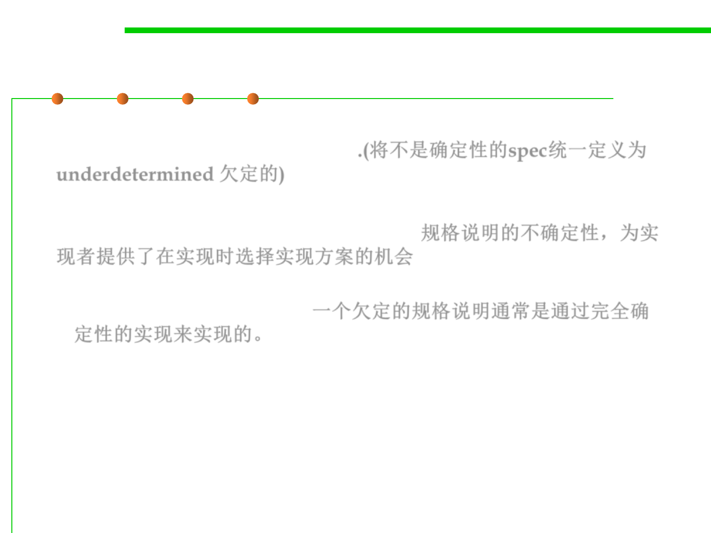

3.2 Designing Specification
Deterministic vs. underdetermined specs
▪ To avoid the confusion, we’ll refer to specifications that are not
deterministic as underdetermined.(将不是确定性的spec统一定义为
underdetermined 欠定的)
▪ Underdeterminism in specifications offers a choice that is made by
the implementer at implementation time. 规格说明的不确定性，为实
现者提供了在实现时选择实现方案的机会
– An underdetermined spec is typically implemented by a fully-
deterministic implementation.一个欠定的规格说明通常是通过完全确
定性的实现来实现的。